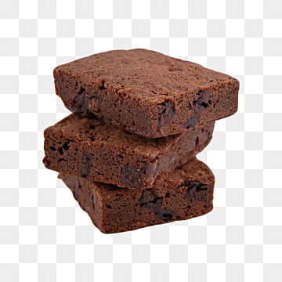

Brownie Cookie Recipe

Description
This brookie recipe was inspired by a co-worker who couldn't decide if she wanted brownies or chocolate chip cookies for her birthday treat. Since she said I should just pick one, I thought this up on the way home. I couldn't find a recipe like it on Allrecipes, so I created it. These brookies go quickly; I usually make a double batch in a jelly roll pan.
Ingredients
- 1/2 cup butter, softened
- 1/2 cup light brown sugar
- 1/4 cup white sugar
- 1/2 teaspoon vanilla extract
- 1 large egg
- 1 1/4 cups all-purpose flour
- 1/2 teaspoon salt
- 1/2 teaspoon baking soda
- 1 cup semisweet chocolate chips
Steps
- Step 1 - Make the cookie dough and press it into a greased baking dish.
- Step 2 - Make the brownie batter and spread it over the cookie layer.
- Step 3 - Bake in the preheated oven until a toothpick comes out clean.
- Step 4 - Cut the brookies into bars.